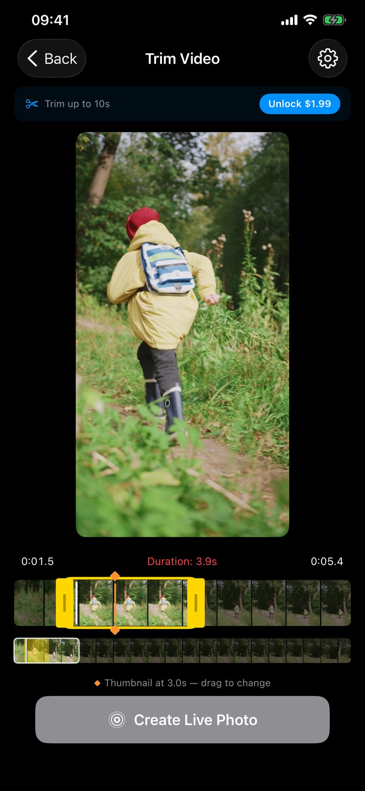
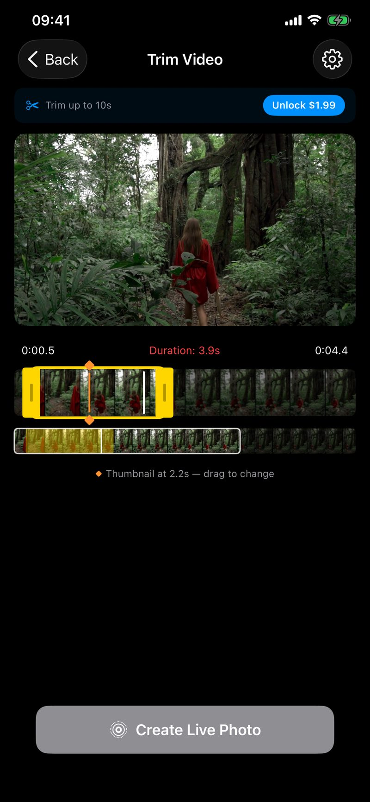
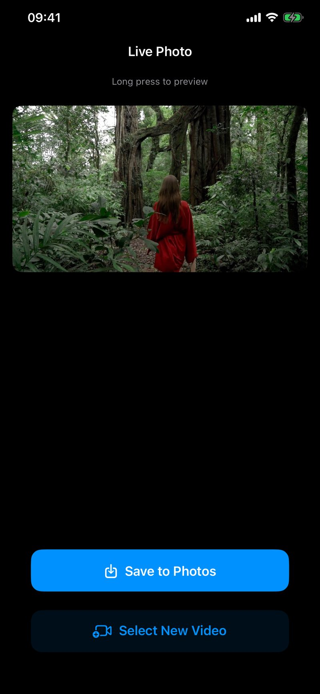
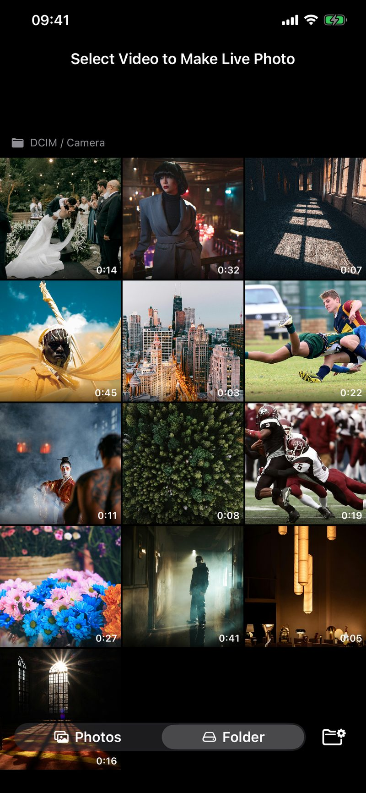

任何视频,
转为真正的 Live Photo。
从相册中选择一段视频,裁剪到完美的瞬间,选择缩略图帧,然后保存为真正的 Live Photo——包含您熟悉且喜爱的长按动画效果。全新批量导出:一次最多转换 20 个视频。




精准定位那一帧。
使用精确的拖动手柄裁剪最多 3 秒的片段。概览时间线让您快速浏览长视频,无需逐帧滑动。存储在 iCloud 中的视频可即时开始播放——无需等待下载。
在裁剪后的片段中拖动关键帧标记,选择成为 Live Photo 静态图片的精确帧。
相机素材直接转 Live Photo。
浏览外接硬盘、SD 卡和文件夹中的视频——非常适合将相机素材转换为 Live Photo,无需先导入到照片图库。您选择的文件夹会在会话之间被记住。
一次处理整本相册。
将整本假期相册一键转换为 Live Photo——单次最多 20 个视频。在缩略图上滑动即可多选(就像「照片」App 一样),为整批设置一个统一的裁剪时长和封面帧,剩下的交给 MakeLive。
任务会在后台继续运行;即使应用被关闭,队列也会被保存——再次打开时会提示您继续上次的进度。失败的任务会保留在队列中,可一键重试。
- 单次最多 20 个视频
- 滑动缩略图即可多选
- 整批统一设置裁剪时长与封面帧
- 后台运行 · 关闭应用后可继续
- 支持照片图库与外接文件夹 / SD 卡
- 每个结果直接保存至照片图库
四步做出完美的 Live Photo。
1. 选择视频
照片图库中的任何视频。iCloud 视频即时开始播放——无需等待下载。
2. 精确裁剪
拖动手柄裁剪最多 3 秒(扩展版 10 秒)。概览时间线方便浏览长视频。
3. 选择缩略图
拖动关键帧标记,锁定想要定格的静态画面。
4. 保存
长按预览,然后保存为标准 Live Photo 到图库——动画一应俱全。
体积虽小,功能完备。
仅 1 MB。无账户,无广告,无追踪。
- 选择照片图库中的任何视频
- 精确裁剪最多 3 秒(扩展版 10 秒)
- 批量导出,一次最多 20 个视频
- 概览时间线快速浏览长视频
- 选择精确的缩略图静态帧
- 长按预览 Live Photo 效果后再保存
- 从外接硬盘和 SD 卡导入
- 文件夹选择在会话之间保留
- 后台批量处理,可中断后继续
- Live Photo 创建逐步进度显示
- 默认裁剪时长可自定义(0.5–10 秒)
- 设置与恢复购买
- 支持英文与简体中文
- 保存为标准 Apple Live Photo
一次购买,解锁全部 Pro 功能。
每项升级可单独购买,也可用 MakeLive Pro 套装一次拿下,更划算。
扩展裁剪
将 Live Photo 时长从 3 秒延长到 10 秒,捕捉更完整的瞬间。
$2.99 · 一次性
文件夹浏览
直接从外接硬盘、SD 卡和文件夹导入,无需先添加到「照片」。
$2.99 · 一次性
批量导出
单次最多将 20 个视频转换为 Live Photo,支持后台处理。
$2.99 · 一次性
MakeLive Pro — 三项全解锁,$5.99
文件夹浏览 + 扩展裁剪 + 批量导出,一次购买全部包含。单独购买需 $8.97,组合套装立省近 $3。非订阅制——付一次,永久使用。
获取 MakeLive Pro — $5.99分享回忆、相机素材,以及更多。
把 SD 卡中的相机素材变成可分享、可长按回放的 Live Photo。捕捉长视频中动作的最精彩瞬间。分享那一刻——而不只是静态图。
应用参数
- 免费下载
- 分类 —— 摄影与录像
- 平台 —— iPhone & iPad
- 系统要求 —— iOS 17.0 或更新
- 大小 —— 1 MB
- 语言 —— 英文、简体中文
- 应用内购 —— 扩展裁剪 $2.99
- 应用内购 —— 文件夹浏览 $2.99
- 应用内购 —— 批量导出 $2.99
- 应用内购 —— MakeLive Pro 套装 $5.99(三项全含)